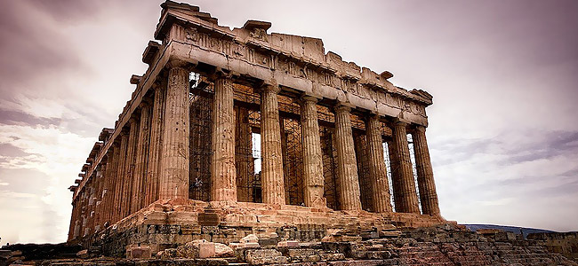
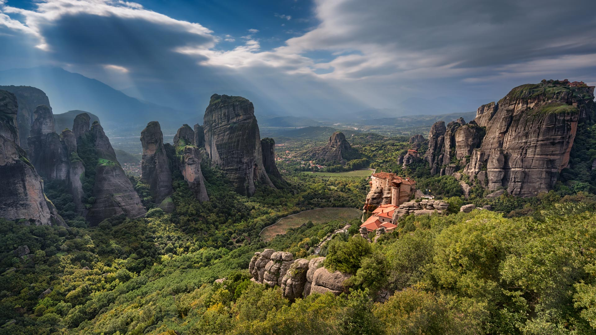

Acropolis d'Atenes
L'Acròpolis d'Atenes, dedicada a la deessa Atenea, és el monument més important de Grècia i símbol de la grandesa de l'antiga civilització grega. El complex arquitectònic va ser construït sobre un turó sagrada, on està situat l'edifici del Partenó, l'Erectèon i el Temple d'Atenea Niké, els Propileus, construïts al segle V aC.
El 2009 es va obrir al públic el nou Museu de l'Acròpoli on es custodien algunes escultures procedents del jaciment arqueològic. L'Acròpolis i el Partenó poden ser observats des de gran part de la ciutat d'Atenes.

Centre històric de Patmos
El centre històric de Patmos, o Choro, és la capital de l'illa homònima de l'arxipèlag del Dodecanès, al mar Egeu, i és un lloc de pelegrinatge i de notable interès artístic on les cerimònies religioses es practiquen encara en la forma original dels primers períodes del cristianisme.
No només això, d'interès excepcional són l'arquitectura de l'illa i de la capital. El monestir de Sant Joan Evangelista i la Cova de l'Apocalipsi són els llocs en els quals l'apòstol va escriure les obres més sagrades de la Cristiandat: l'Evangeli i l'Apocalipsi.

Ciutat medieval de Rodes
La ciutat medieval de Rodes, protegida per les muralles de 4 quilòmetres de longitud construïdes pels Cavallers de Sant Joan durant l'ocupació del 1309 al 1523, està considerada un obra mestra de l'arquitectura militar. La ciutat custòdia barri Collacchio, el palau de l'Armeria, l'Hospital dels Cavallers, el Palau del Gran Mestre i el carrer dels Cavallers.

Meteora
Meteora és un centre important per a l'església ortodoxa, la segona àrea monàstica i de peregrinació a Grècia després de la Muntanya Athos, però també famosa meta turística. La seva bellesa es deu a la presència de nombrosos monestirs construïts al cim de torres rocoses naturals.
La bellesa d'aquesta selva de pedra que combina perfectament el paisatge natural i l'arquitectura, enamora als visitants. Els primers monjos es van refugiar en aquestes altures en el segle XI i des de llavors diversos monasteios s'han construït dels quals sobreviuen actualment només sis estructures de les 20 originals.

Mistrà
Mistra, o Mystras, és una ciutat fortificada del Peloponès meridional, a 6 quilòmetres d'Esparta, construïda amb forma d'amfiteatre al voltant de la fortalesa edificada al 1249 sobre el pendent d'un turó. La ciutat va ser abandonada al 1832 quan es va fundar la moderna Esparta pel rei Otón, deixant en peu només les ruïnes medievals. La ciutat, durant els segles, ha patit influència bizantina, turca i veneciana.

Monastirs de la Muntanya Athos
Όρος Άθως
La Muntanya Athos, és un centre espiritual ortodox que ocupa la península més oriental de la regió Calcídica i està habitat per 1500 monjos aproximadament. L'entrada a la zona, que comprèn 20 monestirs de diferents estils arquitectònics i de gran importància, està subjecta a restriccions especials per part dels monjos, que la consideren una terra sagrada.
La Muntanya Athos custòdia nombrosos tresors artísticosa: antics manuscrits, icones i frescos pintats pels representants de la pintura bizantina més il·lustres, Teofane el Grec i Manuele Panselinos. La muntanya sagrada està vetada a dones i nens.

Lloc Arqueològic de Delfos
L'àrea arqueològica del santuari panhelénico de Delfos s'estén sobre el vessant de la muntanya Parnàs, a Grècia central, i en l'antiguitat era el centre del món grec, la seu de l'oracle més important i venerat del déu Apol·lo. Formen part d'aquesta àrea arqueològica el temple dedicat a l'Apolo Delfico, el famós teatre i l'estadi dels Jocs Pítics.
Les ruïnes visibles del Teatre daten del període imperial romà mentre que l'Estadi va ser erigit al segle V aC i restructurado en el període romà quan van ser afegits els seients i l'entrada monumental.

Lloc Arqueòlogic de Epidauro
Επίδαυρος
És una petita ciutat de l'Argòlida, a la badia de Methana al Peloponès, famosa per la seva santuari dedicat a Asclepi, déu de les curacions, que va tenir gran fama a partir del segle IV aC, i pel seu teatre, obra de Policlet el Jove, construït al segle III aC amb una càvea (graderia) molt àmplia i una orquestra (escena) circular, ben conservat i en el qual encara avui tenen lloc representacions i esdeveniments. Restes de la ciutat es troben en l'acròpoli de la península d'Acte, l'actual Nisi, on s'identifiquen els temples d'Atenea Cisea i Artemisa.
Al recinte sagrat, delimitat per muralles i pòrtics i amb propileus monumentals, sorgia el temple del déu Asclepi, construït en roca calcària i adornat amb decoracions precioses i escultures en els frontons. A l'estadi i en l'hipòdrom es desenvolupaven els jocs panhel·lènics, cada 4 anys.

Temple d'Apolo Epicuro en Bassae
El temple d'Apol·lo epicuri es troba prop de la ciutat de Bassae, al Peloponès. El temple, gran i imponent, va ser construït entre el 450 i el 425 aC per Ictino, l'arquitecte del Parteón. El temple està dedicat a Apol·lo, déu del sol i de la salut, que va salvar la ciutat de la pesta del segle V aC, i la seva arquitectura combina elements dels estils dòric, jònic i corinti.
El fris estava sostingut per semicolumnes jòniques i tenia trenta-un metres de longitud, i estava constituït per 23 planxes de marbre, de les quals dotze representaven les batalles entre els Grecs i els Amazones i els onze restants, les batalles entre Lápitas i Centaures.